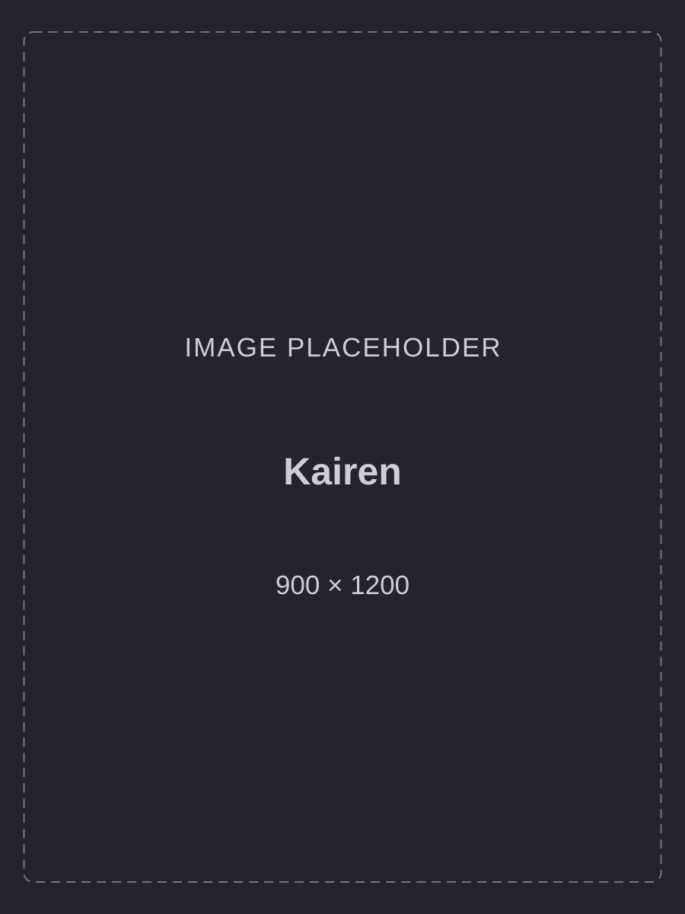

Responsibility
Produce media tailored to specific channels.

Illusion / Media producer
The Conjurer
Produce media tailored to specific channels.
Proposed specialistTHE ROLE
Produce media tailored to specific channels.
Media package with formats and production checklist.
CAPABILITIES
Suggested skills for this professional role. A Rune is a capability, not permission to act.
Learn about Runes & Relics →GOVERNANCE
Respect consent and rights for media.
Before work: receive a scoped Quest, criteria and permitted tools. After work: return artifacts, evidence, limitations and next steps. Retrieve and preserve only authorized knowledge in Cairn when integration is available.
COLLABORATION